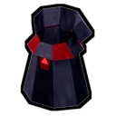

Cult Leader
Cult Leader is a boss met in Greenshore and Cultist Tower. The master of the Cultist Tower. It tears into your stack with portals and fireballs, then shields itself from your next hit.
Attacks
| Attack | Style | What it does |
|---|---|---|
| Void Portal | Magic | A portal tears out half of one row, or spikes burst up from under your stack. Keep the stack low so it has less to tear. |
| Braided Fireball | Magic | Three braided fireballs blow a crater of up to eight blocks out of your stack. Fill the crater before you build over it. |
| Void Shield | Magic | He raises a shield that soaks up your next hit whole. Spend a small clear on it, then save the big one. |
The game's advice: His shield soaks up your next hit. Spend a small clear on it, then save the big one.
Weakness: spins hit it 10% harder.
Strategy
How to beat Cult Leader: gear, skills and what to do on the board, in a player's words.
Locations
- Greenshore, in the Greenshore Story (fight 19 of the road)
- the Endless Dungeon's Cultist Tower: a round boss; the warden its chest follows
Combat stats
| Where | Health | Hit | Attacks every |
|---|---|---|---|
| Greenshore Story | 1,400 | 5–6 | — |
| Endless Dungeon, fight 1 | 2,100 | 8–10 | — |
| Endless Dungeon, fight 11 | 3,500 | 10–12 | — |
| Endless Dungeon, fight 21 | 4,900 | 10–12 | — |
| Dark Endless Dungeon, fight 1 | 2,800 | 10–12 | — |
| Dark Endless Dungeon, fight 11 | 4,200 | 13–16 | — |
| Dark Endless Dungeon, fight 21 | 5,600 | 13–16 | — |
Hit is the range before your Armor takes its share. In the Endless Dungeon an enemy grows tougher every fight; champions and omens change it further.
Drops
Each kill rolls its table once in the Greenshore Story, twice in the Endless Dungeon and three times in its Dark. Every row is rolled on its own, so a kill can pay several.
| Item | Quantity | Rarity | Log |
|---|---|---|---|
 Gold Coin Gold Coin | 100–200 | 1/3 | ✓ |
 Nettle Fabric Nettle Fabric | 1 | 1/3 | ✓ |
 Horn Chunks Horn Chunks | 2–4 | 15% | |
 Broken Horn Broken Horn | 1 | 1/9 | ✓ |
 Cultist Robe | 1 | 1/15 | ✓ |
 Adamantite Ingot Adamantite Ingot | 1–2 | 1/20 | |
 Magic Ring Magic Ring | 1 | 1/25 | ✓ |
 Kris Kris | 1 | 1/30 | ✓ |
 Cultist Book Cultist Book | 1 | 1/30 | ✓ |
 Magic Chain Magic Chain | 1 | 1/48 | |
 Cult Idol Cult Idol | 1 | 1/1,000 | ✓ |
Every kill also rolls
| Item | Quantity | Rarity | Notes |
|---|---|---|---|
| Rare Drop table (Greenshore) | — | 1/16 | Once a kill, whatever the mode |
 Respec Orb Respec Orb | 1 | 1/1,600 | A run's first kill; rises each kill to 1/533 from the 50th |
 Pet Cultist Pet Cultist | 1 | 1/100 | Pet, one of each |
 Gilded Ornament Kit Gilded Ornament Kit | 1 | 1/500,000 | Every kill everywhere |
Rare Drop table (Greenshore)
One kill in 16 rolls this list once, apart from the enemy's own table. Rare Drops never count toward the Collection Log.
| Item | Quantity | Rarity |
|---|---|---|
| Gold Coin | 100–300 | 1/107 |
 Iron Ingot Iron Ingot | 4–8 | 1/100 |
 Mithril Ingot Mithril Ingot | 2–4 | 1/133 |
 Maple Plank Maple Plank | 2–4 | 1/160 |
 Cotton Fabric Cotton Fabric | 2–4 | 1/160 |
 Rugged Hide Rugged Hide | 1–2 | 1/200 |
 Coal Coal | 20–40 | 1/145 |
| Adamantite Ingot | 1 | 1/400 |
 Ipe Plank Ipe Plank | 1 | 1/400 |
| Nettle Fabric | 1 | 1/400 |
| Magic Ring | 1 | 1/800 |
| Magic Chain | 1 | 1/800 |
 Treasure Seal Treasure Seal | 1 | 1/1,600 |
| 1–3 | 1/1,600 |
Collection Log
Cult Leader has a page under ENEMIES in the Collection Log, in its BOSSES section. It lists:
In the game each slot stays hidden until it drops for you.
Gallery

Trivia
Design notes and anything else worth knowing.
Changes
What changed for Cult Leader, update by update.
| Enemies | |
|---|---|
| Greenshore Story | Zombie · Slime · Squirrel · Cyclops · Oak Entling · Bandit · Bandit King · Super Zombie · Punchy · Shooty · Bernie · Bandit Elite · Cultist · Cult Leader |
| Red Desert: Dust Bowl | Sand Zombie · Wormling · Desert Worm |
| Red Desert: Sand Storm | Raider · Scrap Warlord |
| Red Desert: Pyramids | Sand Zombie · Mummy · Possessed Sarcophagus |
| Red Desert: Sand Cave | Rockling · Cave Spider · Sandstone Golem |
| Red Desert: Research Station | Sand Veil Cultist · Lesser Cult Leader · The Old Man |
| Red Desert: Hellish Desert | The Unbound |
| Elsewhere | Garbage Man · Slime King |